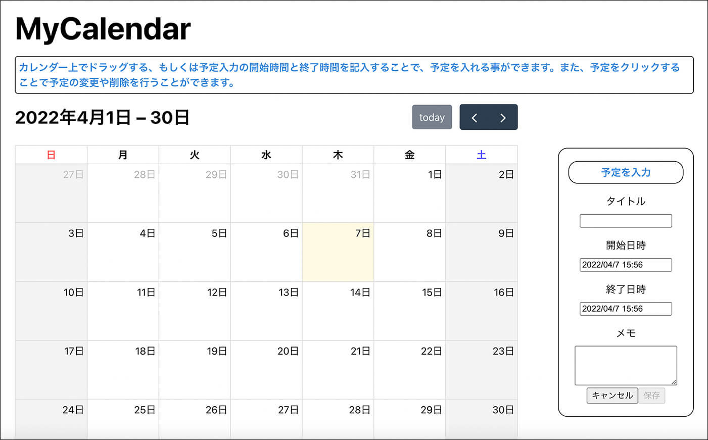

My Calendar
作成期間
約4ヶ月
使用技術
HTML+CSS
JavaScript
React
Node.js
作品について
学校の進級制作展で展示した作品になります。
テーマは「web技術を使用した作品」で
１．webサイト制作
２．フロントエンドプログラミング（アプリ）
３．UI/UX
の３つのうちのどれかで作成するという課題です。私は２を選びました。理由は、せっかくの進級展という機会なので、自分の将来やりたいことにつながること、またやったことのない分野に挑戦しようと思い、２を選びました。今回カレンダーを作った理由は、初心者でも作れるような難易度だったことです。初めての分野になるため、たくさんの記事を参考にしながら作成しました。
1.準備
まず最初に環境を作るために、ReactとNode.jsをダウンロードしました。ReactはCreate React Appを使用して環境を作りました。基本はFullcalendarを使用しました。コンポーネントをダウンロードするためにはnpmを使用して、ターミナルで管理しました。これを作るまでに学んでいた範囲はHTMLとCSS、JavaScriptまでだったので、書き方などは調べながらの制作になりました。使ったコンポーネントは、
@fullcalendar/react
@fullcalendar/daygrid
fullcalendar/timegrid
@fullcalendar/interaction
react-datepicker
date-fns/locale/ja
です。
class App extends Component を親コンポーネントとして使用しています。
2.機能
画面左側がカレンダー画面になります。カレンダー上部には表示されている月、todayボタンと月移動ボタンが設定されています。他の月のページに移動した後でも、todayボタンを押すことで今日の日付のあるページに戻ります。今日の日付は黄色に強調して表示されています。画面左側が予定入力と変更画面になります。
使い方
- カレンダー上で予定を入れたい範囲をドラッグで選択。または予定入力画面で日付を選択する。
- 予定の主なタイトル（旅行、食事など）を記入する。
- 任意でメモに予定の詳細を記入する。
- 保存ボタンを押すことで予定がカレンダー上に表示される。
入力画面
予定入力画面で開始時間、終了時間をクリックすることでも日付を設定できます。メモは任意ですが、予定の内容を書き込むことができます。設定した予定（カレンダー上の青いバー）をクリックすることで、予定変更画面になり、予定の変更と削除ができます。またDatePickerの都合で終了時間が開始時間より早い日時に設定できてしまいますが、その場合アラームで時間設定がおかしいことを教えてくれます。予定入力画面と予定変更画面は色で区別をしています。変更画面にclassでchangeを設定して、色を変えています。
See the Pen Untitled by fukutada (@fukutada) on CodePen.
3.公開
作品の公開にはまずGitHubにレポジトリを作り、Netlifyと連携して公開しています。NetlifyはGitHubのレポジトリと連携してそのレポジトリを公開してくれます。レポジトリを更新することでNetlifyも更新されます。GitHubへのアップロードはGitHub DesktopとVScodeを使っています。
4.感想
今回の作品は、初めての分野に挑戦してみた作品だったので知らないことを調べながらの制作になりました。そもそもアプリ制作自体初めてだったので環境の作り方の勉強からになりました。初めての仕組みや言葉ばかりで、詰まることも多々ありましたがカレンダーとして機能するようになりました。最後に進級展でのプレゼン資料を載せます。